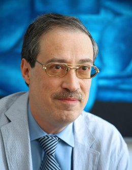
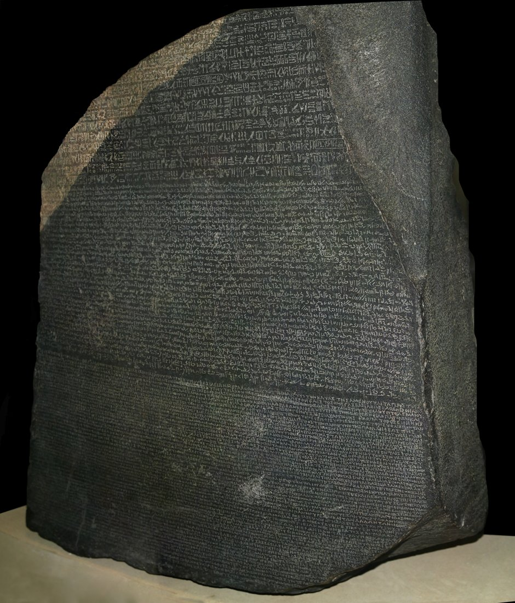

講師 / SPEAKER
ジャン・ヴィナン
Jean Winand
リエージュ大学 教授・元副学長
Professor and former Vice-Rector, University of Liège
講演詳細
- 日付
- 2026年11月10日（火）
- 時間
- 17:30–19:00（日本時間）
- 会場
- 筑波大学 人文社会学系棟 A520
- 形式
- 対面＋オンライン
- 言語
- 英語
講演について
ルネサンスからシャンポリオンによる解読まで、ヨーロッパで古代エジプトの文字がどのように受け止められてきたかをたどります。学者たちの解釈や前提に注目し、ヒエログリフ解読へ至る道のりを紹介します。
Lecture details
- Date
- Tuesday, November 10, 2026
- Time
- 17:30–19:00 JST
- Venue
- Humanities and Social Sciences Building, Room A520, University of Tsukuba
- Format
- In person & online
- Language
- English
About the lecture
A lecture tracing European interpretations of Egyptian hieroglyphs from the Renaissance to Champollion’s decipherment.
How to participate
Online participation is available.
Please contact So Miyagawa for online access details.

文字の受容から解読へ
From reception to decipherment
古代エジプトヒエログリフルネサンスシャンポリオン
Photo: © Hans Hillewaert / CC BY-SA 4.0 · 表示用に縮小